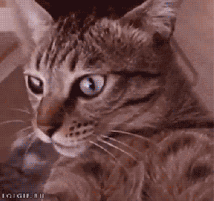

bienvenido a las internets!!!
este ews mi projecto de la tarea 1 de mi nuebo curso de diseñador frontend!!! la idea de este curso es apender mucho y hacerme la lks aciendo paginas webs!!!
🇨🇱🇨🇱🇨🇱🇨🇱 Mis personas favoritas de Chile 🇨🇱🇨🇱🇨🇱🇨🇱

don francisco
alias: el cabeza de chancho, me gusta mucho porque me hace reir y siempre esta alegre, aunque los comunistas una vez lo hicieron llorar una vez :(
marcianeque
Dimelo má Ando en busca de una criminal (ah, ah) Esa que el gatillo le gusta jalar (rata-ta) Que le guste flotar y fumar (brr) Tussi, keta quiere' mezclar
la mojo jojo
escuchar a esta simpatica señora es como fue como oler perico ligado con el polvo que suelta la palometa peluda.
la cathi barriga
me gusta porque colecciona peluches como yo 💘